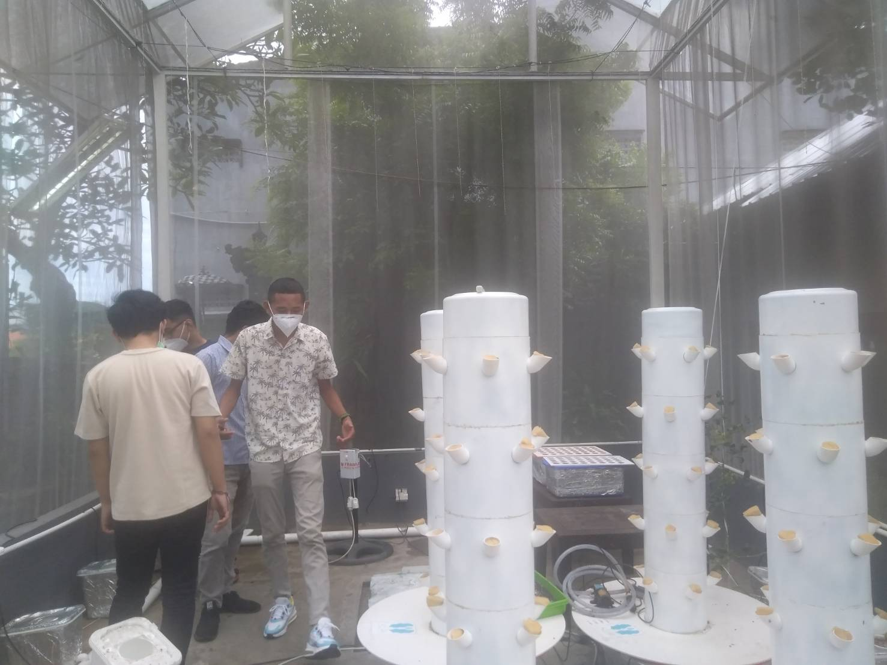

Perkembangan teknologi di era digital seperti sekarang ini bertumbuh semakin cepat dari hari ke hari,
dalam perkembangannya teknologi ini akan membantu pekerjaan manusia. Melalui platformnya yakni
Techno-researchpreneur University,Undiknas senantiasa selalu adaptif dan responsif terhadap modernisasi dan digitalisasi
pengembangan produk yang berdaya guna bagi masyarakat. Sebagai perguruan tinggi yang memiliki Program Studi Teknologi Informasi,
Undiknas merespon hal tersebut dengan membangun laboratorium pertanian yang berbasis teknologi (pertanian presisi).
Pembangunan laboratorium ini di inisiasi oleh Rektor Undiknas, Dr. Ir. Nyoman Sri Subawa, S.T., S.Sos.,M.M.,
sebagai sebuah ruang bagi dosen-dosen Prodi Teknologi Informasi untuk mengaplikasikan ilmu pengetahuan yang dimilikinya.
Laboratorium ini kemudian dikenal dengan sebutan Precision Agriculture Laboratory (PRITA Laboratory).